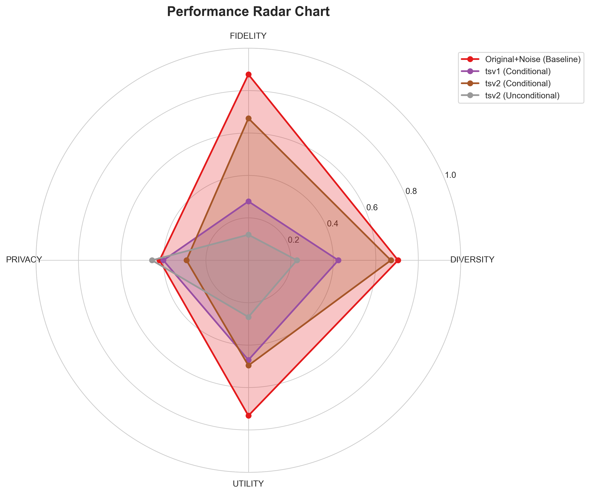

üîç Time Series Synthetic Data Evaluation Report - Business Analysis
Generated: 2025-08-11
Author: Jed Lee
üéØ Executive Summary
CRITICAL FINDING: Current synthetic data generation methods are NOT READY FOR PRODUCTION USE.
Best Conditional Method (TSV2):
57.0% HIGH RISK
Best Unconditional Method (TSV2):
23.4% HIGH RISK
Original data with noise:
72.9% BASELINE
üö® IMMEDIATE ACTION REQUIRED: Do not deploy current synthetic data methods in production.
All variants significantly underperform even basic noise addition techniques.
üíº Business Impact Translation
What These Scores Mean for Your Business:
üî¥ Diversity (55%)
Risk: Synthetic data doesn't cover full business scenarios
Impact: Models trained on this data will fail on edge cases and new market conditions
üü° Fidelity (47%)
Risk: Statistical patterns don't match real data
Impact: Business analytics and forecasts will be inaccurate
üî¥ Privacy (35%)
Risk: Data may be reverse-engineered to original
Impact: Potential GDPR/compliance violations, customer trust issues
üü° Utility (48%)
Risk: Data isn't useful for machine learning
Impact: ML models will perform poorly, wasted development costs
üìñ Understanding This Report
This evaluation compares synthetic time series data against original data across four key dimensions.
Conditional generation creates time series based on static features (like categories), while
unconditional generation creates time series without any conditioning information.
üìä Evaluation Metrics Explained:
- Diversity (25% weight): Measures how well synthetic data covers the full variety of patterns found in original data. This includes statistical diversity (variance, range, entropy), coverage ratio (what percentage of original data patterns appear in synthetic data), uniqueness score (anti-duplication), and temporal pattern diversity (different time-based trends and autocorrelations). Higher diversity means synthetic data represents the full spectrum of original data characteristics.
- Fidelity (35% weight): Assesses how closely synthetic data matches the statistical properties and distributions of original data using core TSGBench metrics. This includes marginal distribution difference (MDD), autocorrelation difference (ACD), statistical moments matching (skewness/kurtosis), dynamic time warping (DTW), and Euclidean distance (ED). Higher fidelity means synthetic data is statistically indistinguishable from original data.
- Privacy (15% weight): Evaluates basic privacy risks and memorization detection in synthetic data. This includes distance to closest records (memorization detection) and membership inference vulnerability (basic distinguishability assessment). Privacy is not a core TSGBench focus, so simplified distance-based approaches are used. Higher privacy scores mean better protection against privacy attacks.
- Utility (25% weight): Tests practical usefulness and functional equivalence for real-world applications. This includes discriminative scoring (how hard is it to distinguish synthetic from real), predictive performance (forecasting accuracy), downstream task performance (classification/regression), and statistical consistency (business metrics preservation). Higher utility means synthetic data works effectively for practical business purposes.
Baseline: original_noise is simply the original data with added noise - synthetic methods should ideally outperform this simple baseline to demonstrate meaningful generation capabilities.
üèÜ Best Synthetic Performers
- CONDITIONAL: tsv2 (Score: 0.5698)
- UNCONDITIONAL: tsv2 (Score: 0.2343)
üìè Baseline Performance
- ORIGINAL_NOISE: 0.7288 (Original data with noise)
⚠️ Critical Technical Issues Identified
üî• Severe Issues (Require Immediate Attention)
- Baseline Underperformance: All synthetic methods score 19-37% lower than simple noise addition
- Unconditional Diversity Collapse: Only 22.8% diversity indicates severe mode collapse
- Privacy Vulnerabilities: High membership inference accuracy (95-100%) suggests data memorization
- Statistical Divergence: Poor fidelity scores indicate synthetic data distributions don't match original
üü° Moderate Issues (Need Investigation)
- Column-Level Inconsistency: Performance varies significantly across data features
- Temporal Pattern Loss: Autocorrelation differences suggest poor time series modeling
üìä Data Quality Concerns
- Poor Coverage: Synthetic data covers limited portions of the original data space effectively
- High Discriminative Accuracy: ML models can easily distinguish real from synthetic (poor utility)
- Moment Mismatch: Skewness and kurtosis differ significantly from original data
üìä Performance Summary
üîó Conditional Generation - ORIGINAL_NOISE (Baseline)
üîó Conditional Generation - TSV1
üîó Conditional Generation - TSV2
üîÑ Unconditional Generation - TSV2
üéØ Actionable Recommendations
üö® Immediate Actions
- STOP production deployment plans - Current synthetic data is not suitable for business use
- Establish quality gates - Define minimum acceptable scores (≥80% vs baseline)
üîß Technical Improvements
- Algorithm review - Investigate why methods underperform simple noise addition
- Address diversity collapse - Fix unconditional generation variety issues
- Improve privacy - Implement differential privacy and reduce memorization
üìã Next Steps
- Validation framework - Implement automated quality testing
- Business requirements - Define specific use-case needs
- Performance monitoring - Set up continuous data quality monitoring
üìà Performance Visualizations
Metric Breakdown
Performance Radar

Comprehensive Heatmap
üìä Time Series Data Comparison & Analysis
Visual comparison and detailed performance analysis showing how synthetic methods compare to original data patterns.
üîó Conditional Generation - Overall Comparison
Shows all 4 conditional variants (Original, TSV1, TSV2, Original+Noise) overlaid for direct comparison.
üìä Conditional Generation - Detailed Column Analysis
Performance breakdown for each column (col1, col2, col3) comparing Original+Noise baseline with synthetic methods.
üìä col1 - Method Comparison
| Method |
Diversity |
Fidelity |
Privacy |
Utility |
| Original+Noise (Baseline) |
0.999 |
1.000 |
0.410 |
1.000 |
| TSV1 |
0.572 |
0.373 |
0.284 |
0.812 |
| TSV2 |
0.906 |
0.689 |
0.261 |
0.963 |
üìä col2 - Method Comparison
| Method |
Diversity |
Fidelity |
Privacy |
Utility |
| Original+Noise (Baseline) |
1.000 |
0.978 |
0.801 |
0.989 |
| TSV1 |
0.597 |
0.490 |
0.349 |
0.788 |
| TSV2 |
0.994 |
0.828 |
0.234 |
0.961 |
üìä col3 - Method Comparison
| Method |
Diversity |
Fidelity |
Privacy |
Utility |
| Original+Noise (Baseline) |
0.961 |
0.789 |
0.285 |
0.989 |
| TSV1 |
0.609 |
0.457 |
0.360 |
0.766 |
| TSV2 |
0.918 |
0.798 |
0.225 |
0.957 |
üîÑ Unconditional Generation - Overall Comparison
Shows all available unconditional variants overlaid for direct comparison.
⚠️ Data Length Adjustment: This evaluation uses only overlapping timesteps for fair comparison.
Metrics are calculated only on the common time period where all variants have actual data, without any padding or truncation.
Visualizations may show the full length of each series, but scoring reflects only the overlapping portion.
üìä Unconditional Generation - Detailed Column Analysis
Performance breakdown for each financial column (Open, High, Low, Close, Volume).
üìä Open - Method Comparison
| Method |
Diversity |
Fidelity |
Privacy |
Utility |
| TSV2 |
0.306 |
0.659 |
0.473 |
0.849 |
üìä High - Method Comparison
| Method |
Diversity |
Fidelity |
Privacy |
Utility |
| TSV2 |
0.314 |
0.651 |
0.474 |
0.844 |
üìä Low - Method Comparison
| Method |
Diversity |
Fidelity |
Privacy |
Utility |
| TSV2 |
0.297 |
0.666 |
0.509 |
0.842 |
üìä Close - Method Comparison
| Method |
Diversity |
Fidelity |
Privacy |
Utility |
| TSV2 |
0.297 |
0.668 |
0.513 |
0.854 |
üìä Volume - Method Comparison
| Method |
Diversity |
Fidelity |
Privacy |
Utility |
| TSV2 |
0.358 |
0.852 |
0.406 |
0.832 |